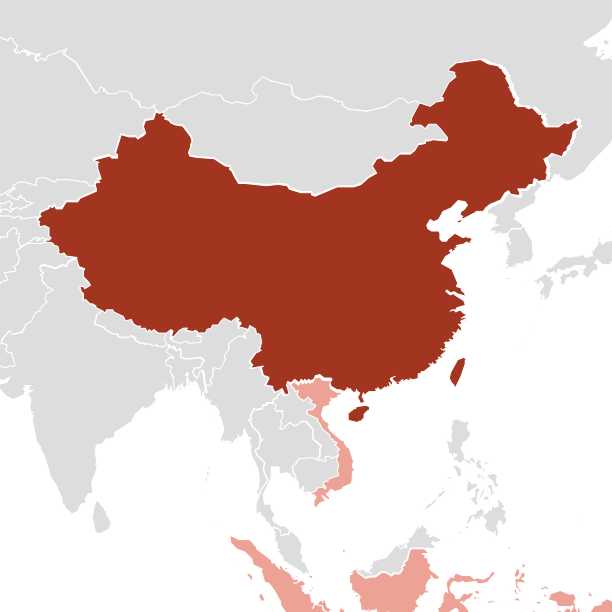

Before 200 BCE
China
- The Yi people preserved food by layering fish, rice and salt — a process that produces a pungent sauce. Many of these people later moved into southeast Asia.

1500s
Vietnam
- kecap-ikan
- Fujianese traders and seamen in the bustling ports fell for the stuff, naming it ke-tchup, meaning preserved-fish sauce.
1600s
Indonesia
- kecap, ke-tchup
- Fujianese settlers set up Chinese sauce-making factories, and British sailors discovered the fish sauce and flavored their hardtack with it.
Late 1600s
Great Britain
- ketchup, chatchup, catsup
- British sailors brought the sauce home. The British recipe evolved to include mushroom and tomatoes and exclude fish.
Late 1800s
United States
- catsup, ketchup
- The American recipe became thicker and sweeter than its British cousin, and cooks added more sugar and vinegar.